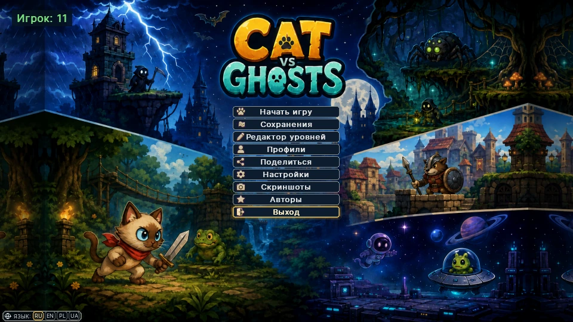
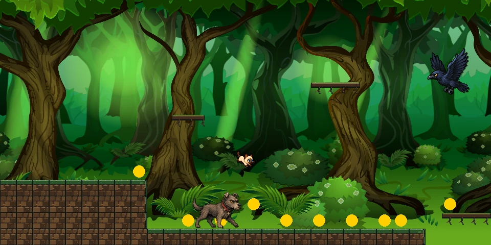
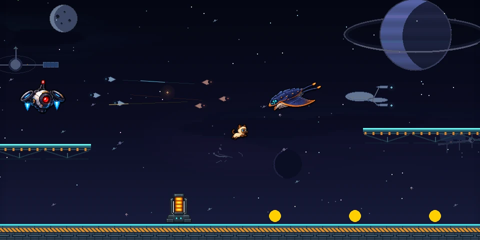
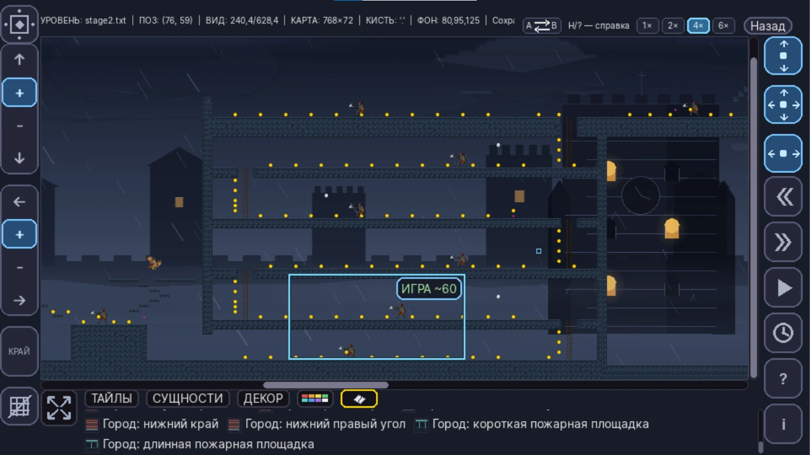

Completed · v1.0.0
Cat vs Ghosts
A completed Windows platformer built with Python and pygame-ce, including custom content tools and release tooling.
Vitalii Butsanov · Developer Portfolio
Completed and in-development projects focused on practical software, tools, games and automation.
Selected work

Completed · v1.0.0
A completed Windows platformer built with Python and pygame-ce, including custom content tools and release tooling.
Technical audit in progress
Structure reserved for the project. Technical details will be added only after the current audit is complete.
No unverified exchange, database or integration claims are shown here.
Completed project
A 2D desktop platformer that grew into a full Windows game with a multi-stage campaign, custom level editor, localization, performance work and a release pipeline.
Real campaign content is built and revised through custom editor tooling with reusable brushes, object anchors and large-map navigation.
The project includes hardware-aware calibration, profiling and optimized background/rendering paths.
English, Polish, Russian and Ukrainian localization plus profiles, saves, campaign progression and settings.
PyInstaller packaging, installer integration and separation of development-only profiling tools from the final build.



Project in review
This section is intentionally incomplete while the existing project is being audited and modernized. Confirmed architecture, integrations and technologies will be added later.
About
I build personal software projects with an emphasis on practical functionality, iterative development, debugging, performance work and shipping usable results.
Used in real projects
How I work
Build in small, testable steps and verify each change before moving on.
Measure real bottlenecks and use profiling data to guide performance work.
Create practical tools when they improve content creation, testing or release work.
Treat packaging, testing, documentation and release quality as part of the project.
Contact
Project showcases and public repositories are available on GitHub.